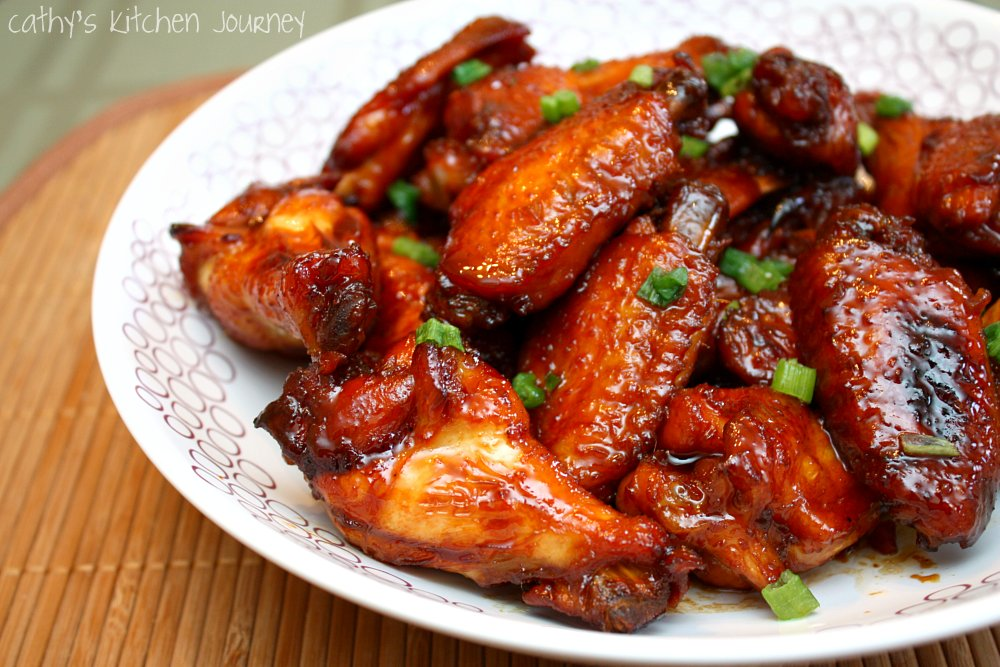

Caramelized Chicken Wings

Description:
Juicy, caramelized chicken wings that are very easy to make, Yummy!
(actually one of my top 3 favorite dishes)
Ingrdients (6 servings) :
- 1 cup water
- ½ cup white sugar
- ¼ cup and 1 tablespoon and 1 teaspoons soy sauce
- 2 tablespoons peanut butter
- 1 tablespoon honey
- ½ tablespoon and ½ teaspoon wine vinegar
- 1 tablespoon minced garlic
-
12 large chicken wings, tips removed and wings cut in half at joint
- 1 teaspoons sesame seeds, or to taste
Steps:
-
In an electric skillet or a large skillet over medium heat, mix together
the water, sugar, soy sauce, peanut butter, honey, wine vinegar, and
garlic until smooth and the sugar has dissolved.
- Place the wings into the sauce, cover, and simmer for 30 minutes.
-
Uncover and simmer until the wings are tender and the sauce has
thickened, about 30 more minutes, spooning sauce over wings
occasionally.
- Sprinkle with sesame seeds.